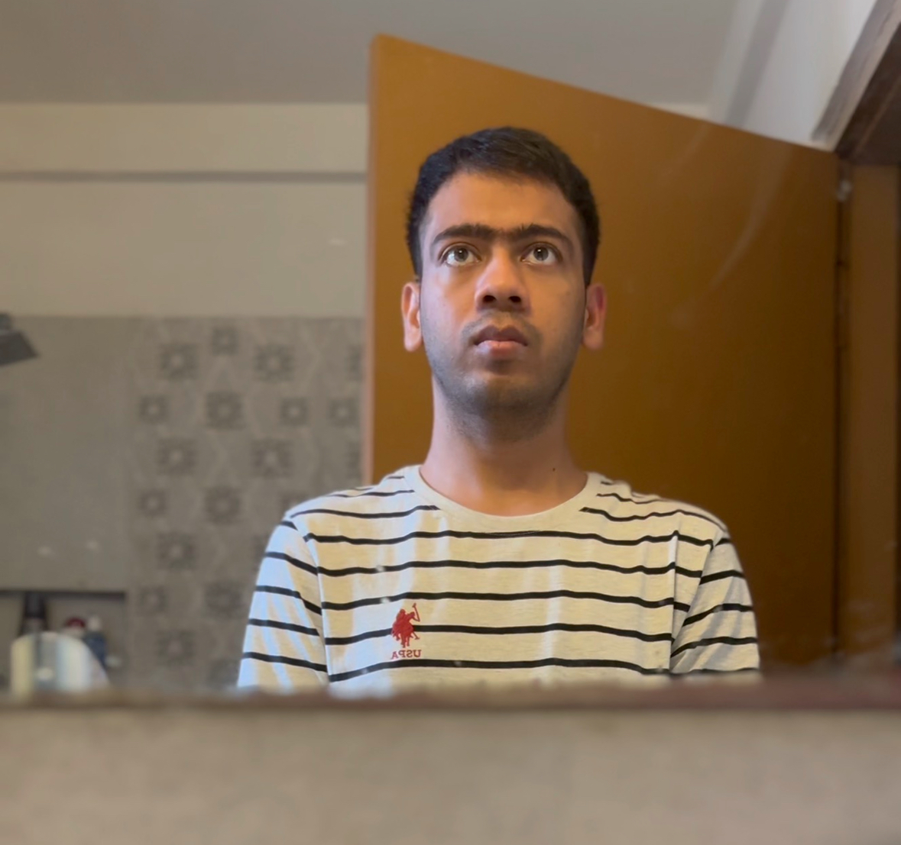

|
Hi! I'm Raja...
I'm a Research Assistant in the AI-Infrastructure team at Microsoft Research India (MSR-I), where I work on optimizing systems for efficient inference of Large Language Models (LLMs). Currently, I'm exploring ways to optimize the serving of vision transformer models.
In 2023, I graduated from the Undergraduate Programmes at the IIT Bombay, where I earned my B.Tech (with Honors) in Computer Science. During my undergrad, I worked with Prof. Purushottam (Puru) Kulkarni on CXL and persistent memory.
My research interests broadly lie in computer systems, with a current focus on making them more efficient for modern machine learning workloads.
|
 |